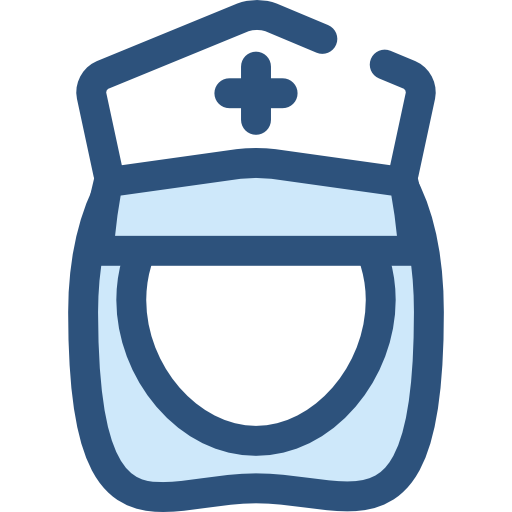
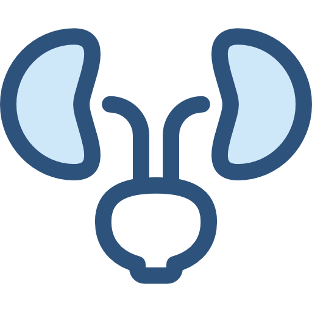
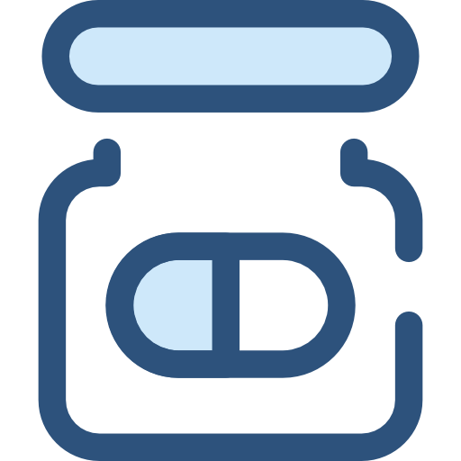
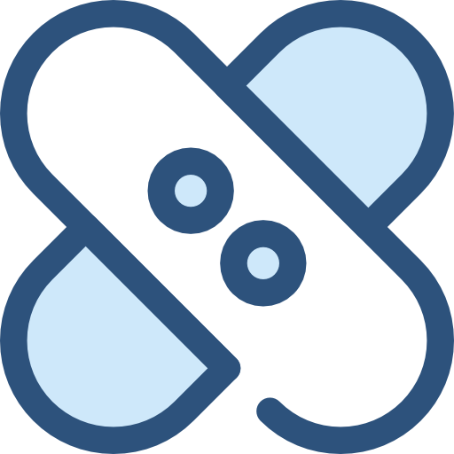
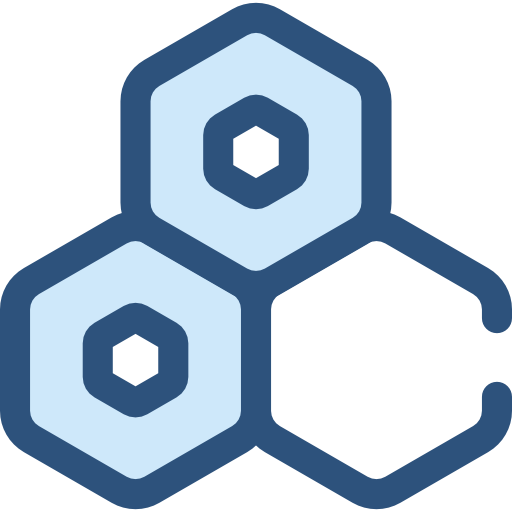

Konsultacje lekarskie:
- Internista
- Pediatra 
- Ginekolog 
- Dermatolog 
- Kardiolog
- Ortopeda 
- Neurolog 
Diagnostyka laboratoryjna:
- Badania krwi
- Badania moczu
- Badania kału
- Testy hormonalne
- Testy serologiczne
- Badania mikrobiologiczne
Usługi przychodni w ramach kontraktów NFZ:
| Podstawowa Opieka Zdrowotna (POZ) |
| Konsultacje specjalistyczne dla dorosłych i dzieci |
| Profilaktyczne badania zdrowotne |
| Programy zdrowotne (szczepienia, badania przesiewowe) |